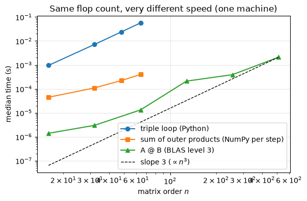
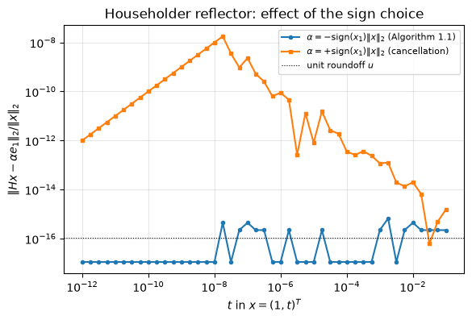
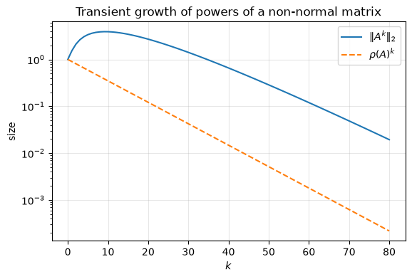
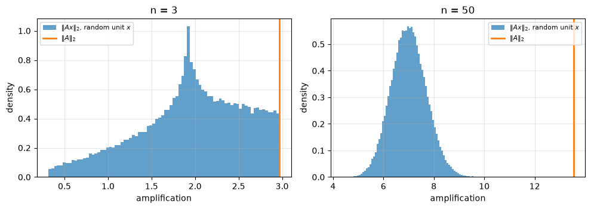

1.9. Lab 1: Matrix computations, orthogonality, and norms#
This notebook accompanies Chapter 1 of the notes. Every experiment checks a statement from the chapter numerically.
Learning objectives. After working through this lab you should be able to
implement the inner-product, column and outer-product forms of the matrix product and verify them against
A @ Bwith a justified tolerance;measure run times carefully and distinguish flop counts from observed speed;
construct Householder reflectors and Givens rotations and explain the role of the sign choice and of
hypot;compute vector and matrix norms, and check the inequalities that relate them;
explain why sampling random unit vectors underestimates \(\|A\|_2\).
Run the cells in order from a fresh kernel.
import time
import matplotlib.pyplot as plt
import numpy as np
import scipy.linalg as sla
rng = np.random.default_rng(20260927)
u = np.finfo(float).eps / 2 # unit roundoff of IEEE double precision, 2**-53
plt.rcParams.update({"figure.figsize": (6.4, 4.0), "axes.grid": True, "grid.alpha": 0.3})
print(f"NumPy {np.__version__}; unit roundoff u = {u:.3e}")
NumPy 2.5.3; unit roundoff u = 1.110e-16
1.9.1. 1. Three ways to multiply matrices#
The entry \(c_{ij}\) of \(C = AB\) is an inner product of a row of \(A\) and a column of \(B\); column \(j\) of \(C\) is \(Ab_j\), a combination of the columns of \(A\); and \(C\) is the sum of the \(k\) outer products \(a_\ell\tilde b_\ell^T\) (equations (1.1)–(1.3)). The three functions below implement these views literally.
def matmul_inner(A, B):
"""C[i, j] = (row i of A) . (column j of B): a triple loop."""
m, k = A.shape
k2, n = B.shape
assert k == k2, "inner dimensions must agree"
C = np.zeros((m, n))
for i in range(m):
for j in range(n):
s = 0.0
for ell in range(k):
s += A[i, ell] * B[ell, j]
C[i, j] = s
return C
def matmul_column(A, B):
"""Column j of C is A @ b_j, a linear combination of the columns of A."""
C = np.zeros((A.shape[0], B.shape[1]))
for j in range(B.shape[1]):
for ell in range(A.shape[1]):
C[:, j] += B[ell, j] * A[:, ell]
return C
def matmul_outer(A, B):
"""C is the sum of the rank-one matrices a_ell (row ell of B)."""
C = np.zeros((A.shape[0], B.shape[1]))
for ell in range(A.shape[1]):
C += np.outer(A[:, ell], B[ell, :])
return C
How close should the results be? The three functions perform the same multiplications but add them in different orders, so their results differ by rounding errors. A standard bound (proved in Chapter 3) says that any order of summation gives a computed product \(\widehat C\) with \(|\widehat C - AB| \le \gamma_k |A|\,|B|\) entrywise, where \(\gamma_k = ku/(1-ku)\) and \(|A|\) is the matrix of absolute values. Two computed products can therefore differ by at most \(2\gamma_k|A||B|\). We test exactly this bound rather than an arbitrary tolerance.
m, k, n = 30, 40, 20
A = rng.standard_normal((m, k))
B = rng.standard_normal((k, n))
C_ref = A @ B
gamma_k = k * u / (1 - k * u)
bound = 2 * gamma_k * (np.abs(A) @ np.abs(B))
for f in (matmul_inner, matmul_column, matmul_outer):
C = f(A, B)
ratio = np.max(np.abs(C - C_ref) / bound)
print(f"{f.__name__:14s} max |C - C_ref| = {np.max(np.abs(C - C_ref)):.2e}; "
f"fraction of the bound used = {ratio:.3f}")
assert np.all(np.abs(C - C_ref) <= bound)
matmul_inner max |C - C_ref| = 7.11e-15; fraction of the bound used = 0.026
matmul_column max |C - C_ref| = 7.11e-15; fraction of the bound used = 0.026
matmul_outer max |C - C_ref| = 7.11e-15; fraction of the bound used = 0.026
The observed differences use only a small fraction of the worst-case bound, which is typical: rounding errors tend to partially cancel. The bound is nevertheless the right test, because it is guaranteed.
The worked example of the notes (Example 1.1) can be checked exactly, since all its entries are small integers.
A_ex = np.array([[1.0, 2.0], [0.0, 1.0], [3.0, 0.0]])
B_ex = np.array([[2.0, -1.0], [1.0, 4.0]])
print(matmul_outer(A_ex, B_ex))
assert np.array_equal(matmul_outer(A_ex, B_ex), np.array([[4.0, 7.0], [1.0, 4.0], [6.0, -3.0]]))
[[ 4. 7.]
[ 1. 4.]
[ 6. -3.]]
1.9.2. 2. Flops versus run time#
All three loops and A @ B perform \(2n^3 - n^2\) flops for square matrices
(Proposition 1.2). We now time them. To make timings meaningful
we repeat each measurement and report the median, after one warm-up call.
The absolute numbers depend on the machine, the BLAS library and the Python
interpreter that executed this notebook; the slopes on a log-log plot are
what the flop count predicts.
def median_time(f, *args, repeats=5):
f(*args) # warm-up
times = []
for _ in range(repeats):
t0 = time.perf_counter()
f(*args)
times.append(time.perf_counter() - t0)
return float(np.median(times))
sizes_loop = [16, 32, 48, 64]
sizes_blas = [16, 32, 64, 128, 256, 512]
t_inner = [median_time(matmul_inner, *(rng.standard_normal((n, n)) for _ in range(2)), repeats=3)
for n in sizes_loop]
t_outer = [median_time(matmul_outer, *(rng.standard_normal((n, n)) for _ in range(2)))
for n in sizes_loop]
t_blas = [median_time(np.matmul, *(rng.standard_normal((n, n)) for _ in range(2)), repeats=20)
for n in sizes_blas]
fig, ax = plt.subplots()
ax.loglog(sizes_loop, t_inner, "o-", label="triple loop (Python)")
ax.loglog(sizes_loop, t_outer, "s-", label="sum of outer products (NumPy per step)")
ax.loglog(sizes_blas, t_blas, "^-", label="A @ B (BLAS level 3)")
ref = np.array(sizes_blas, dtype=float)
ax.loglog(ref, t_blas[-1] * (ref / ref[-1]) ** 3, "k--", lw=1, label=r"slope 3 ($\propto n^3$)")
ax.set_xlabel("matrix order $n$")
ax.set_ylabel("median time (s)")
ax.set_title("Same flop count, very different speed (one machine)")
ax.legend()
plt.show()
n_big = sizes_blas[-1]
print(f"Observed rate of A @ B at n = {n_big}: {2 * n_big**3 / t_blas[-1] / 1e9:.1f} Gflop/s")
print(f"Observed rate of the Python loop at n = {sizes_loop[-1]}: "
f"{2 * sizes_loop[-1]**3 / t_inner[-1] / 1e6:.2f} Mflop/s")

Observed rate of A @ B at n = 512: 128.3 Gflop/s
Observed rate of the Python loop at n = 64: 9.26 Mflop/s
Interpretation. The Python loop spends its time interpreting bytecode,
so its rate is millions of flops per second. A @ B calls an optimized BLAS
routine that keeps blocks of the matrices in cache and uses vector
instructions and several cores, and reaches billions of flops per second. For
small \(n\) the BLAS curve is flat because fixed overheads dominate; the
\(n^3\) behavior is visible only for larger \(n\). None of these numbers is a
property of the algorithms, which all perform the same arithmetic.
Order of evaluation. The cost of a product chain depends on where the parentheses go (Exercise 1.2): \((AB)x\) costs about \(2n^3\) flops and \(A(Bx)\) about \(4n^2\).
n = 1000
A = rng.standard_normal((n, n))
B = rng.standard_normal((n, n))
x = rng.standard_normal(n)
t_left = median_time(lambda: (A @ B) @ x)
t_right = median_time(lambda: A @ (B @ x))
print(f"(AB)x: {t_left * 1e3:.2f} ms A(Bx): {t_right * 1e3:.3f} ms ratio {t_left / t_right:.0f}")
print(f"flop ratio predicted: {(2 * n**3 + 2 * n**2) / (4 * n**2):.0f}")
# Both orders compute the same vector up to rounding: |difference| <= 2 gamma_{2n} |A||B||x|.
gamma_2n = 2 * n * u / (1 - 2 * n * u)
assert np.all(np.abs((A @ B) @ x - A @ (B @ x)) <= 2 * gamma_2n * (np.abs(A) @ (np.abs(B) @ np.abs(x))))
(AB)x: 8.26 ms A(Bx): 0.286 ms ratio 29
flop ratio predicted: 500
The measured ratio is usually smaller than the flop ratio, because matrix-vector products run at the lower speed of level-2 BLAS: they are limited by memory traffic rather than arithmetic.
1.9.3. 3. Orthogonal matrices#
A convenient source of random orthogonal matrices is the \(Q\) factor of the QR factorization of a Gaussian matrix (Chapter 7). We check the properties in Proposition 1.3. A computed \(Q\) is orthogonal only to within rounding errors; for Householder QR the departure \(\|Q^TQ - I\|_2\) is a modest multiple of \(nu\), and we test against \(10nu\).
n = 200
Q, _ = np.linalg.qr(rng.standard_normal((n, n)))
x = rng.standard_normal(n)
y = rng.standard_normal(n)
lam = np.linalg.eigvals(Q)
orth_err = np.linalg.norm(Q.T @ Q - np.eye(n), 2)
print(f"||Q^T Q - I||_2 = {orth_err:.2e} (n u = {n * u:.2e})")
print(f"| ||Qx|| / ||x|| - 1 | = {abs(np.linalg.norm(Q @ x) / np.linalg.norm(x) - 1):.2e}")
print(f"|(Qx)^T(Qy) - x^T y| = {abs((Q @ x) @ (Q @ y) - x @ y):.2e}")
print(f"max | |lambda| - 1 | = {np.max(np.abs(np.abs(lam) - 1)):.2e}")
print(f"det(Q) = {np.linalg.det(Q):+.12f}")
assert orth_err < 10 * n * u
assert abs(abs(np.linalg.det(Q)) - 1) < 10 * n * u
||Q^T Q - I||_2 = 2.33e-15 (n u = 2.22e-14)
| ||Qx|| / ||x|| - 1 | = 1.11e-16
|(Qx)^T(Qy) - x^T y| = 1.07e-14
max | |lambda| - 1 | = 1.07e-14
det(Q) = -1.000000000000
A rectangular matrix with orthonormal columns satisfies \(Q^TQ = I_n\) but not \(QQ^T = I_m\); \(QQ^T\) is a projector of rank \(n\).
Q_thin, _ = np.linalg.qr(rng.standard_normal((6, 2)))
P = Q_thin @ Q_thin.T
print(f"||Q^T Q - I_2|| = {np.linalg.norm(Q_thin.T @ Q_thin - np.eye(2)):.1e}")
print(f"||Q Q^T - I_6|| = {np.linalg.norm(P - np.eye(6)):.3f}")
print(f"P^2 = P: {np.allclose(P @ P, P)}; rank(P) = {np.linalg.matrix_rank(P)}")
||Q^T Q - I_2|| = 8.5e-17
||Q Q^T - I_6|| = 2.000
P^2 = P: True; rank(P) = 2
1.9.4. 4. Householder reflectors#
We implement Algorithm 1.1. The function returns \(v\) with \(v_1 = 1\) and \(\beta = 2/(v^Tv)\), and a second function applies \(H = I - \beta vv^T\) to a vector without forming \(H\).
def householder_vector(x):
"""Return (v, beta, alpha) with (I - beta v v^T) x = alpha e_1 and v[0] = 1.
The sign of alpha is chosen opposite to x[0] (sign(0) = +1) so that
v[0] = x[0] - alpha is computed without cancellation.
"""
x = np.asarray(x, dtype=float)
normx = np.linalg.norm(x)
if normx == 0:
raise ValueError("x must be nonzero")
s = 1.0 if x[0] >= 0 else -1.0
alpha = -s * normx
v = x.copy()
v[0] = x[0] - alpha # = x[0] + s*||x||: no cancellation
v = v / v[0]
beta = 2.0 / (v @ v)
return v, beta, alpha
def apply_householder(v, beta, y):
"""Compute (I - beta v v^T) y in about 4m flops."""
return y - beta * v * (v @ y)
Verification. \(Hx\) should equal \(\alpha e_1\) up to rounding errors of
order \(mu\|x\|_2\), and the explicit matrix \(H\) should be symmetric and
orthogonal to working accuracy. We also compare with SciPy, whose QR routine
uses the same reflectors internally: the first column of scipy.linalg.qr’s
\(R\) has entry \(\pm\|x\|_2\) at the top.
for m in (2, 10, 500):
x = rng.standard_normal(m)
v, beta, alpha = householder_vector(x)
Hx = apply_householder(v, beta, x)
target = np.zeros(m); target[0] = alpha
rel_err = np.linalg.norm(Hx - target) / np.linalg.norm(x)
H = np.eye(m) - beta * np.outer(v, v)
orth = np.linalg.norm(H.T @ H - np.eye(m), 2)
r11 = sla.qr(x.reshape(-1, 1), mode="r")[0][0, 0]
print(f"m = {m:3d}: ||Hx - alpha e1||/||x|| = {rel_err:.1e}, ||H^T H - I|| = {orth:.1e}, "
f"|alpha| - |r11 (SciPy)| = {abs(alpha) - abs(r11):.1e}")
assert rel_err < 10 * m * u and orth < 10 * m * u
assert abs(abs(alpha) - abs(r11)) < 10 * m * u * abs(alpha)
assert np.array_equal(H, H.T)
if m <= 10: # determinant of a reflector is -1
assert abs(np.linalg.det(H) + 1) < 10 * m * u
m = 2: ||Hx - alpha e1||/||x|| = 0.0e+00, ||H^T H - I|| = 2.7e-16, |alpha| - |r11 (SciPy)| = 0.0e+00
m = 10: ||Hx - alpha e1||/||x|| = 1.9e-16, ||H^T H - I|| = 2.5e-16, |alpha| - |r11 (SciPy)| = -4.4e-16
m = 500: ||Hx - alpha e1||/||x|| = 2.0e-16, ||H^T H - I|| = 8.9e-16, |alpha| - |r11 (SciPy)| = 0.0e+00
The sign matters. Now we reverse the sign choice, as in Exercise 1.6, for vectors \(x = (1, t)^T\) that are already close to \(e_1\). With the wrong sign, \(v_1 = x_1 - \|x\|_2\) is computed by subtracting two nearly equal numbers.
def householder_wrong_sign(x):
x = np.asarray(x, dtype=float)
alpha = np.sign(x[0]) * np.linalg.norm(x) # same sign as x[0]: cancellation
v = x.copy()
v[0] = x[0] - alpha
return v, alpha
ts = np.logspace(-1, -12, 45)
err_good, err_bad = [], []
for t in ts:
x = np.array([1.0, t])
v, beta, alpha = householder_vector(x)
err_good.append(np.linalg.norm(apply_householder(v, beta, x) - [alpha, 0]) / np.linalg.norm(x))
vb, ab = householder_wrong_sign(x)
Hx = x - 2 * vb * (vb @ x) / (vb @ vb)
err_bad.append(np.linalg.norm(Hx - [ab, 0]) / np.linalg.norm(x))
fig, ax = plt.subplots()
ax.loglog(ts, np.maximum(err_good, u / 10), "o-", ms=3, label=r"$\alpha = -\mathrm{sign}(x_1)\|x\|_2$ (Algorithm 1.1)")
ax.loglog(ts, err_bad, "s-", ms=3, label=r"$\alpha = +\mathrm{sign}(x_1)\|x\|_2$ (cancellation)")
ax.axhline(u, color="k", lw=0.8, ls=":", label="unit roundoff $u$")
ax.set_xlabel(r"$t$ in $x = (1, t)^T$")
ax.set_ylabel(r"$\|Hx - \alpha e_1\|_2 / \|x\|_2$")
ax.set_title("Householder reflector: effect of the sign choice")
ax.legend(fontsize=8)
plt.show()
print(f"x = (1, 1e-9): good sign error {err_good[np.argmin(abs(ts - 1e-9))]:.1e}, "
f"wrong sign error {err_bad[np.argmin(abs(ts - 1e-9))]:.1e}")

x = (1, 1e-9): good sign error 0.0e+00, wrong sign error 1.0e-09
With the correct sign the error stays at the level of \(u\). With the wrong sign it grows as \(t\) decreases, and once \(t^2<u\) the computed \(\|x\|_2\) equals \(1\) exactly, \(v_1\) becomes \(0\), and the reflector maps \(x\) to \((1,-t)^T\): the relative error is then \(t\) itself.
1.9.5. 5. Givens rotations and hypot#
A rotation that zeros \(x_j\) against \(x_i\) uses \(c = x_i/r\), \(s = x_j/r\) with \(r = \sqrt{x_i^2 + x_j^2}\). Computing \(r\) naively can overflow or underflow even when \(r\) itself is a perfectly representable number.
def givens(a, b):
"""Return (c, s, r) with [[c, s], [-s, c]] @ [a, b] = [r, 0]."""
if b == 0.0:
return 1.0, 0.0, a
r = np.hypot(a, b) # scaled internally: no overflow
return a / r, b / r, r
for a, b in [(3.0, 4.0), (1e200, 1e200), (1e-200, 3e-200)]:
c, s, r = givens(a, b)
G = np.array([[c, s], [-s, c]])
with np.errstate(over="ignore", under="ignore"):
naive = np.sqrt(a * a + b * b)
print(f"(a, b) = ({a:.0e}, {b:.0e}): G @ (a, b) = {G @ np.array([a, b])}, naive r = {naive:.3e}, hypot r = {r:.3e}")
assert abs((G @ np.array([a, b]))[1]) <= 4 * u * abs(r)
(a, b) = (3e+00, 4e+00): G @ (a, b) = [ 5.00000000e+00 -2.22044605e-16], naive r = 5.000e+00, hypot r = 5.000e+00
(a, b) = (1e+200, 1e+200): G @ (a, b) = [ 1.41421356e+200 -3.86166634e+182], naive r = inf, hypot r = 1.414e+200
(a, b) = (1e-200, 3e-200): G @ (a, b) = [3.16227766e-200 5.32779048e-217], naive r = 0.000e+00, hypot r = 3.162e-200
The naive formula returns inf for \(a = b = 10^{200}\) (because \(a^2\)
overflows) and a wrong answer for \(a, b \approx 10^{-200}\) (because \(a^2\)
underflows to zero or to a subnormal number), while hypot is accurate in
both cases.
1.9.6. 6. Vector norms#
We reproduce Example 1.2 and test the inequalities of Theorem 1.3 on many random vectors, including the vectors that attain the constants.
x = np.array([3.0, -4.0, 0.0, 12.0])
print([np.linalg.norm(x, p) for p in (1, 2, np.inf)])
assert [np.linalg.norm(x, p) for p in (1, 2, np.inf)] == [19.0, 13.0, 12.0]
n = 50
X = rng.standard_normal((n, 2000)) * rng.exponential(size=(1, 2000))
X = np.hstack([X, np.eye(n)[:, :1], np.ones((n, 1))]) # e_1 and the ones vector attain the bounds
n1, n2, ninf = (np.linalg.norm(X, p, axis=0) for p in (1, 2, np.inf))
tol = 1 + 4 * n * u # allow rounding in the computed norms
checks = {
"||x||_inf <= ||x||_2": np.all(ninf <= n2 * tol),
"||x||_2 <= sqrt(n)||x||_inf": np.all(n2 <= np.sqrt(n) * ninf * tol),
"||x||_2 <= ||x||_1": np.all(n2 <= n1 * tol),
"||x||_1 <= sqrt(n)||x||_2": np.all(n1 <= np.sqrt(n) * n2 * tol),
"||x||_1 <= n ||x||_inf": np.all(n1 <= n * ninf * tol),
}
for name, ok in checks.items():
print(f"{name:30s} {ok}")
assert all(checks.values())
print("ratio ||x||_1 / (sqrt(n)||x||_2) for the ones vector:", n1[-1] / (np.sqrt(n) * n2[-1]))
[np.float64(19.0), np.float64(13.0), np.float64(12.0)]
||x||_inf <= ||x||_2 True
||x||_2 <= sqrt(n)||x||_inf True
||x||_2 <= ||x||_1 True
||x||_1 <= sqrt(n)||x||_2 True
||x||_1 <= n ||x||_inf True
ratio ||x||_1 / (sqrt(n)||x||_2) for the ones vector: 0.9999999999999999
1.9.7. 7. Matrix norms#
We implement the three formulas of Theorem 1.4 and
compare with numpy.linalg.norm. Our 2-norm uses the eigenvalues of \(A^TA\),
exactly as in the proof. (This is fine for the largest singular value; in
Chapter 2 we will see why forming \(A^TA\) is a bad idea for
the small ones.)
def norm_1(A):
return np.max(np.sum(np.abs(A), axis=0)) # maximum absolute column sum
def norm_inf(A):
return np.max(np.sum(np.abs(A), axis=1)) # maximum absolute row sum
def norm_2(A):
return np.sqrt(np.max(np.linalg.eigvalsh(A.T @ A)))
B = np.array([[3.0, 0.0], [4.0, 5.0]])
print(f"B: ||B||_1 = {norm_1(B)}, ||B||_inf = {norm_inf(B)}, ||B||_2 = {norm_2(B):.6f} (3*sqrt(5) = {3 * np.sqrt(5):.6f})")
assert norm_1(B) == 7 and norm_inf(B) == 9
assert abs(norm_2(B) - 3 * np.sqrt(5)) < 10 * u * 3 * np.sqrt(5) # relative error of order u
for shape in [(5, 5), (40, 7), (7, 40)]:
A = rng.standard_normal(shape)
for mine, p in [(norm_1, 1), (norm_inf, np.inf), (norm_2, 2)]:
ref = np.linalg.norm(A, p)
assert abs(mine(A) - ref) <= 20 * max(shape) * u * ref, (shape, p)
print("norm formulas agree with numpy.linalg.norm")
B: ||B||_1 = 7.0, ||B||_inf = 9.0, ||B||_2 = 6.708204 (3*sqrt(5) = 6.708204)
norm formulas agree with numpy.linalg.norm
The maximizing vector for the 1-norm is a coordinate vector, and for the 2-norm it is the top eigenvector of \(A^TA\). We check that these vectors attain the norm.
A = rng.standard_normal((6, 4))
k = np.argmax(np.sum(np.abs(A), axis=0))
print("1-norm attained at e_k:", np.isclose(np.linalg.norm(A[:, k], 1), norm_1(A)))
w, V = np.linalg.eigh(A.T @ A)
v1 = V[:, -1]
print("2-norm attained at v_1:", np.isclose(np.linalg.norm(A @ v1), norm_2(A)))
1-norm attained at e_k: True
2-norm attained at v_1: True
1.9.7.1. Frobenius norm and rank#
Theorem 1.5 states \(\|A\|_2\le\|A\|_F\le\sqrt r\,\|A\|_2\) with \(r = \operatorname{rank}(A)\). We build matrices of prescribed rank as products of thin factors and check where the ratio \(\|A\|_F/\|A\|_2\) falls.
m, n = 60, 40
print(" r ||A||_F/||A||_2 sqrt(r)")
for r in (1, 2, 5, 10, 40):
A = rng.standard_normal((m, r)) @ rng.standard_normal((r, n))
ratio = np.linalg.norm(A, "fro") / np.linalg.norm(A, 2)
print(f"{r:2d} {ratio:14.4f} {np.sqrt(r):7.4f}")
assert 1 - 1e-12 <= ratio <= np.sqrt(r) * (1 + 1e-12)
r ||A||_F/||A||_2 sqrt(r)
1 1.0000 1.0000
2 1.2444 1.4142
5 1.6748 2.2361
10 2.0603 3.1623
40 3.0922 6.3246
For rank one the ratio is \(1\), the equality case. For higher rank it is strictly between \(1\) and \(\sqrt r\) unless all nonzero singular values are equal, as for a matrix with orthonormal columns.
1.9.7.2. Unitary invariance#
A = rng.standard_normal((30, 20))
U, _ = np.linalg.qr(rng.standard_normal((50, 30))) # 50 x 30 with orthonormal columns
V, _ = np.linalg.qr(rng.standard_normal((20, 20))) # 20 x 20 orthogonal
for p in (2, "fro", 1, np.inf):
print(f"p = {str(p):4s}: ||UAV|| / ||A|| = {np.linalg.norm(U @ A @ V, p) / np.linalg.norm(A, p):.6f}")
p = 2 : ||UAV|| / ||A|| = 1.000000
p = fro : ||UAV|| / ||A|| = 1.000000
p = 1 : ||UAV|| / ||A|| = 1.200699
p = inf : ||UAV|| / ||A|| = 0.862384
The ratio is \(1\) to rounding error for the 2- and Frobenius norms, as Theorem 1.6 asserts, but not for the 1- and \(\infty\)-norms.
1.9.8. 8. Spectral radius, norms, and powers#
Theorem 1.7 gives \(\rho(A)\le\|A\|\). For a non-normal matrix the gap can be large, and the powers \(A^k\) can grow for a while even though \(\rho(A)<1\) forces \(A^k\to 0\) (Exercise 1.10).
A = np.array([[0.9, 1.0], [0.0, 0.9]])
rho = np.max(np.abs(np.linalg.eigvals(A)))
ks = np.arange(0, 81)
norms = [np.linalg.norm(np.linalg.matrix_power(A, k), 2) for k in ks]
print(f"rho(A) = {rho}, ||A||_2 = {np.linalg.norm(A, 2):.4f}; max_k ||A^k||_2 = {max(norms):.3f} at k = {ks[np.argmax(norms)]}")
fig, ax = plt.subplots()
ax.semilogy(ks, norms, label=r"$\|A^k\|_2$")
ax.semilogy(ks, rho ** ks, "--", label=r"$\rho(A)^k$")
ax.set_xlabel("$k$")
ax.set_ylabel("size")
ax.set_title("Transient growth of powers of a non-normal matrix")
ax.legend()
plt.show()
assert all(rho ** k <= nk * (1 + 1e-12) for k, nk in zip(ks, norms))
rho(A) = 0.9, ||A||_2 = 1.5296; max_k ||A^k||_2 = 3.913 at k = 9

1.9.9. 9. Estimating \(\|A\|_2\) by sampling#
Every unit vector gives a lower bound \(\|Ax\|_2\le\|A\|_2\). Sampling random directions is therefore a natural but poor estimator, especially in high dimension (Exercise 1.11). One step of the power method, \(\|A^TAx\|_2/\|Ax\|_2\), is guaranteed to be at least as good as \(\|Ax\|_2\).
fig, axes = plt.subplots(1, 2, figsize=(10, 3.6))
for ax, n in zip(axes, (3, 50)):
A = rng.standard_normal((n, n))
X = rng.standard_normal((n, 100_000))
X /= np.linalg.norm(X, axis=0)
AX = A @ X
amp = np.linalg.norm(AX, axis=0)
power = np.linalg.norm(A.T @ AX, axis=0) / amp
sigma1 = np.linalg.norm(A, 2)
ax.hist(amp, bins=80, density=True, alpha=0.7, label=r"$\|Ax\|_2$, random unit $x$")
ax.axvline(sigma1, color="C1", lw=2, label=r"$\|A\|_2$")
ax.set_xlabel("amplification")
ax.set_ylabel("density")
ax.set_title(f"n = {n}")
ax.legend(fontsize=8)
print(f"n = {n:2d}: ||A||_2 = {sigma1:.4f}, best sample = {amp.max():.4f}, "
f"best after one power step = {power.max():.4f}")
assert amp.max() <= sigma1 * (1 + 1e-12) and np.all(power >= amp * (1 - 1e-12))
plt.tight_layout()
plt.show()
n = 3: ||A||_2 = 2.9699, best sample = 2.9699, best after one power step = 2.9699
n = 50: ||A||_2 = 13.5384, best sample = 10.0755, best after one power step = 12.4466

In three dimensions a hundred thousand samples come close to the maximum; in fifty dimensions they do not, because a random direction is almost orthogonal to the maximizing one. This is an early example of a theme of Chapter 12: random sampling works well only when it is combined with the structure of the problem, here the power method.
1.9.10. 10. Small norms, large condition number#
We verify the numbers quoted in Example 1.4.
H = sla.hilbert(10)
vals = {
"||H||_1": np.linalg.norm(H, 1),
"||H||_inf": np.linalg.norm(H, np.inf),
"||H||_2": np.linalg.norm(H, 2),
"||H||_F": np.linalg.norm(H, "fro"),
"lambda_min": np.linalg.eigvalsh(H)[0],
"kappa_2": np.linalg.cond(H),
}
for name, val in vals.items():
print(f"{name:10s} = {val:.4g}")
assert abs(vals["||H||_1"] - sum(1 / j for j in range(1, 11))) < 1e-14
assert round(vals["||H||_2"], 3) == 1.752 and round(vals["||H||_F"], 3) == 1.786
||H||_1 = 2.929
||H||_inf = 2.929
||H||_2 = 1.752
||H||_F = 1.786
lambda_min = 1.093e-13
kappa_2 = 1.602e+13
The computed \(\kappa_2(H_{10})\approx1.6\times10^{13}\) is itself subject to rounding error of relative size roughly \(\kappa_2 u\approx 10^{-3}\) in the smallest eigenvalue, so only its first two or three digits are meaningful. Chapter 4 explains why.
1.9.11. Common mistakes#
Comparing two computed results with
==or with a tolerance chosen by trial and error. Derive the tolerance from an error bound, as in Section 1.Timing a single run, or timing the first call (which includes one-time overheads), and reporting the result as a property of an algorithm.
Forming a Householder matrix \(H\) explicitly to apply it. Apply \(y - \beta v(v^Ty)\) instead.
Using \(\sqrt{a^2+b^2}\) instead of
hypotinside rotations and norms.Assuming \(\|A\|_2 = \max_i|\lambda_i(A)|\) for a nonsymmetric matrix.
Using
np.random.seed; use aGeneratorfromnp.random.default_rngso that each notebook controls its own random stream.
1.9.12. Your turn#
Write
matmul_row(A, B)that forms each row of \(C\) as a combination of rows of \(B\), and verify it with the bound of Section 1.Extend
householder_vectorto complex vectors. What replaces the sign of \(x_1\)? (Use \(x_1/|x_1|\).)Show numerically that \(\|A\|_2\le\sqrt{\|A\|_1\|A\|_\infty}\) (Exercise 1.4) for 1000 random matrices of various shapes. How tight is the bound typically?
Repeat the sampling experiment of Section 9 with \(n = 10, 20, 100\) and plot the ratio of the best sample to \(\|A\|_2\) against \(n\).
1.9.13. Key takeaways#
The inner-product, column and outer-product views of \(AB\) are the same arithmetic in different orders; the latter two explain range, rank and low-rank structure.
Flop counts are machine independent; run times are not, and must be measured carefully and reported as observations.
Householder reflectors with the sign of Algorithm 1.1 map a vector to a multiple of \(e_1\) with errors of order \(u\); the other sign suffers cancellation.
Norm inequalities, unitary invariance and \(\rho(A)\le\|A\|\) can all be checked numerically, and the checks should use tolerances derived from rounding error bounds.
1.9.14. Further reading#
Trefethen and Bau [1997], Lectures 1–3, and Golub and Van Loan [2013], Chapters 1 and 2. For the rounding error bound used in Section 1, see Higham [2002], Section 3.5.